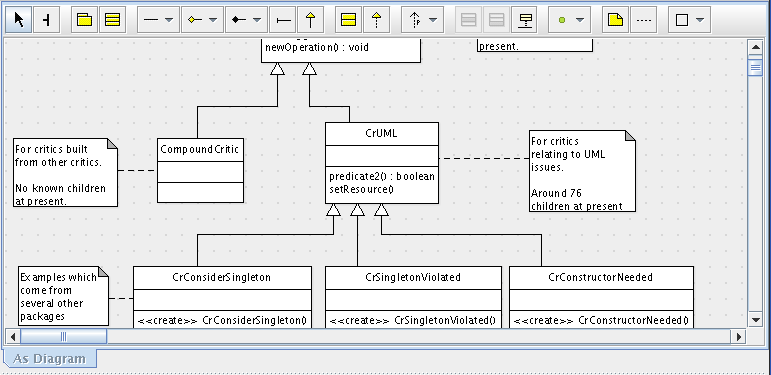

El Panel de Edición de ArgoUML es el área principal de trabajo. Este panel es utilizado para editar programas. Con este fin, el panel tiene una barra de herramientas en la parte superior , que contiene todos los elementos(ModelElement) que pueden ser dibujados en el diagrama en edición. Al hacer Click en una de las herramienta-icono de la barra de herramientas se selecciona el tipo de elemento de módelo que será colocado en el editor con un simple click en el área del diagrama. La barra de Herramientas también contiene algunas herramientas generales de dibujo para la decoración de los diagramas con lineas, texto, y formas predefinidas, que no son parte del modelo de UML.
Volver a ArgoUML Tour
Volver a ArgoUML Inicio